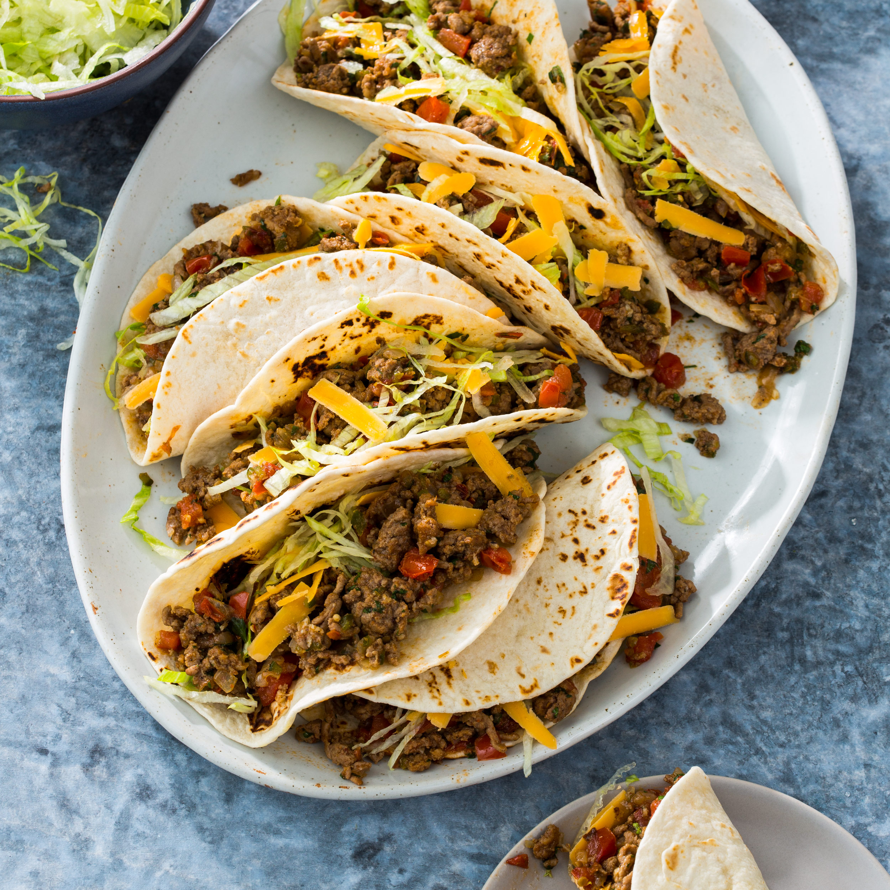

Weeknight Tacos

Description:
Use any kind of meat, including leftovers. If your ground meat is defrosted, this entire meal should take you less than 30 minutes, start to finish.
Ingredients
- ground beef
- chili powder
- tortillas
- condiments
- optional: finely diced onion
Steps
- Brown beef in a large saucepan on high heat.
- Add chili powder, salt, diced onion.
- While onion is sweating, start reheating tortillas in a skillet.
- If needed, deglaze pan with a small amount of water, stock, wine, or beer.
- Find condiments, serve.